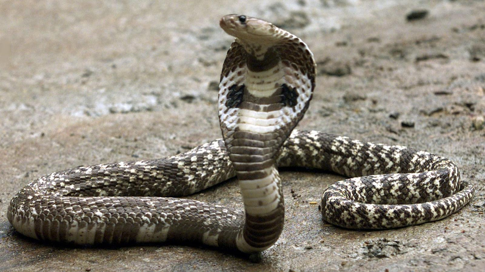
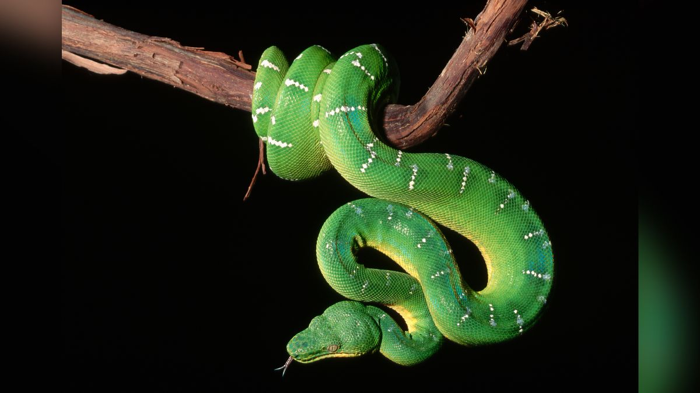

- According to the latest count, there are 3,789 snake species,
making them the second largest group of reptiles after lizards.
They are divided into 30 different families and numerous subfamilies.
Australia is home to approximately 140 of them - Reptiles sometimes get labelled ‘cold-blooded’ but this is incorrect as their blood isn’t actually cold.
The accurate term is ectothermic, meaning their body temperature is variable and regulated by external sources.
Unlike mammals and birds that are able to internally regulate their body temperature,
reptiles need to use sources of heat, like the sun, to warm up. - You might have learned in school that reptiles are different from mammals because they lay eggs.
While we like to classify and categorize everything around us, nature has its own rules.
While approximately 70% of snakes lay eggs, others don’t.
Snakes living in especially colder climates have live births because the eggs wouldn’t survive outside.


